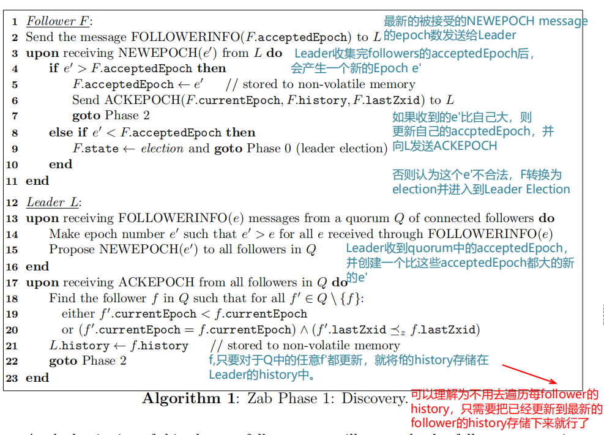
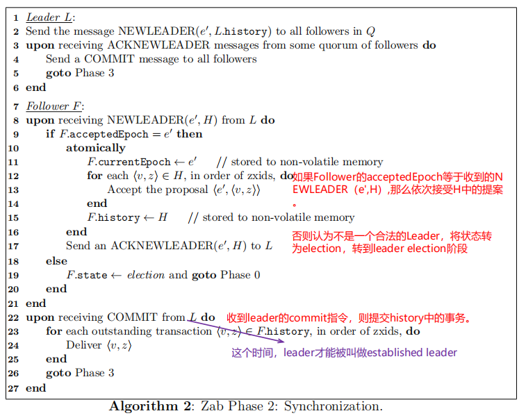
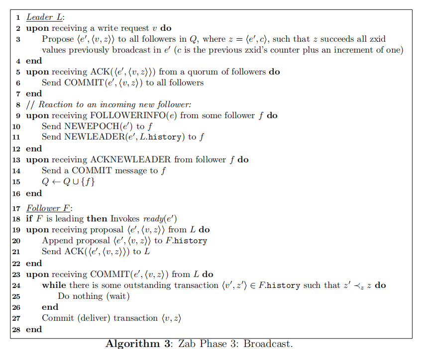
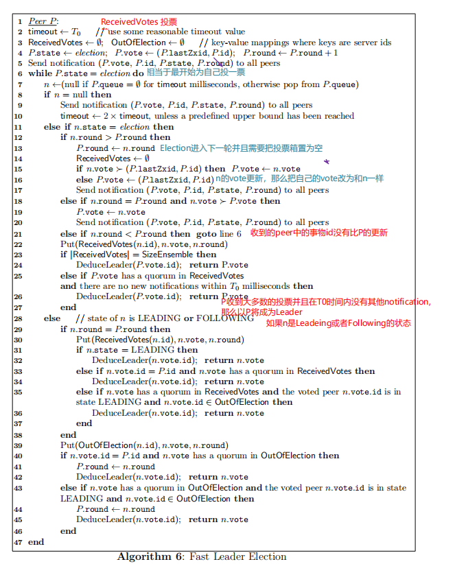

<!DOCTYPE html>
<html>
<head><meta name="generator" content="Hexo 3.9.0">
  <meta charset="utf-8">
  

  
  <title>分布式共识算法-ZAB | Hexo</title>
  <meta name="viewport" content="width=device-width, initial-scale=1, maximum-scale=1">
  <meta name="description" content="1. Introduction  Zookeeper是个为云计算提供容错分布式共识的服务，该服务旨在提供高可用性和高可靠性，因此一些客户机进程依赖它来引导、存储配置数据、运行进程的状态、组成员关系、实现同步原语和管理故障恢复。它通过复制实现可用性和可靠性，并在以读取为主的工作负载中具有良好的性能。  只要大多数节点可用，服务就被认为是可用的。ZooKeeper的一个关键组件是Zab，即ZooKee">
<meta name="keywords" content="zab,blockchain,分布式共识算法">
<meta property="og:type" content="article">
<meta property="og:title" content="分布式共识算法-ZAB">
<meta property="og:url" content="http://yoursite.com/2019/09/13/分布式共识算法/ZAB/index.html">
<meta property="og:site_name" content="Hexo">
<meta property="og:description" content="1. Introduction  Zookeeper是个为云计算提供容错分布式共识的服务，该服务旨在提供高可用性和高可靠性，因此一些客户机进程依赖它来引导、存储配置数据、运行进程的状态、组成员关系、实现同步原语和管理故障恢复。它通过复制实现可用性和可靠性，并在以读取为主的工作负载中具有良好的性能。  只要大多数节点可用，服务就被认为是可用的。ZooKeeper的一个关键组件是Zab，即ZooKee">
<meta property="og:locale" content="en">
<meta property="og:image" content="http://yoursite.com/2019/09/13/分布式共识算法/ZAB/discovery.png">
<meta property="og:image" content="http://yoursite.com/2019/09/13/分布式共识算法/ZAB/syn.png">
<meta property="og:image" content="http://yoursite.com/2019/09/13/分布式共识算法/ZAB/broadcast.png">
<meta property="og:image" content="http://yoursite.com/2019/09/13/分布式共识算法/ZAB/imp.png">
<meta property="og:image" content="http://yoursite.com/2019/09/13/分布式共识算法/ZAB/recovery.png">
<meta property="og:image" content="http://yoursite.com/2019/09/13/分布式共识算法/ZAB/noti.png">
<meta property="og:image" content="http://yoursite.com/2019/09/13/分布式共识算法/ZAB/FLE.png">
<meta property="og:updated_time" content="2019-02-28T07:26:54.000Z">
<meta name="twitter:card" content="summary">
<meta name="twitter:title" content="分布式共识算法-ZAB">
<meta name="twitter:description" content="1. Introduction  Zookeeper是个为云计算提供容错分布式共识的服务，该服务旨在提供高可用性和高可靠性，因此一些客户机进程依赖它来引导、存储配置数据、运行进程的状态、组成员关系、实现同步原语和管理故障恢复。它通过复制实现可用性和可靠性，并在以读取为主的工作负载中具有良好的性能。  只要大多数节点可用，服务就被认为是可用的。ZooKeeper的一个关键组件是Zab，即ZooKee">
<meta name="twitter:image" content="http://yoursite.com/2019/09/13/分布式共识算法/ZAB/discovery.png">
  
    <link rel="alternate" href="/atom.xml" title="Hexo" type="application/atom+xml">
  
  
    <link rel="icon" href="/favicon.png">
  
  
    <link href="//fonts.googleapis.com/css?family=Source+Code+Pro" rel="stylesheet" type="text/css">
  
  <link rel="stylesheet" href="/css/style.css">
</head>
</html>
<body>
  <div id="container">
    <div id="wrap">
      <header id="header">
  <div id="banner"></div>
  <div id="header-outer" class="outer">
    <div id="header-title" class="inner">
      <h1 id="logo-wrap">
        <a href="/" id="logo">Hexo</a>
      </h1>
      
    </div>
    <div id="header-inner" class="inner">
      <nav id="main-nav">
        <a id="main-nav-toggle" class="nav-icon"></a>
        
          <a class="main-nav-link" href="/">Home</a>
        
          <a class="main-nav-link" href="/archives">Archives</a>
        
      </nav>
      <nav id="sub-nav">
        
          <a id="nav-rss-link" class="nav-icon" href="/atom.xml" title="RSS Feed"></a>
        
        <a id="nav-search-btn" class="nav-icon" title="Search"></a>
      </nav>
      <div id="search-form-wrap">
        <form action="//google.com/search" method="get" accept-charset="UTF-8" class="search-form"><input type="search" name="q" class="search-form-input" placeholder="Search"><button type="submit" class="search-form-submit">&#xF002;</button><input type="hidden" name="sitesearch" value="http://yoursite.com"></form>
      </div>
    </div>
  </div>
</header>
      <div class="outer">
        <section id="main"><article id="post-分布式共识算法/ZAB" class="article article-type-post" itemscope itemprop="blogPost">
  <div class="article-meta">
    <a href="/2019/09/13/分布式共识算法/ZAB/" class="article-date">
  <time datetime="2019-09-13T04:49:48.000Z" itemprop="datePublished">2019-09-13</time>
</a>
    
  <div class="article-category">
    <a class="article-category-link" href="/categories/分布式/">分布式</a>►<a class="article-category-link" href="/categories/分布式/分布式共识算法/">分布式共识算法</a>
  </div>

  </div>
  <div class="article-inner">
    
    
      <header class="article-header">
        
  
    <h1 class="article-title" itemprop="name">
      分布式共识算法-ZAB
    </h1>
  

      </header>
    
    <div class="article-entry" itemprop="articleBody">
      
        <h1 id="1-Introduction"><a href="#1-Introduction" class="headerlink" title="1. Introduction"></a>1. Introduction</h1><p>  Zookeeper是个为云计算提供容错分布式共识的服务，该服务旨在提供高可用性和高可靠性，因此一些客户机进程依赖它来引导、存储配置数据、运行进程的状态、组成员关系、实现同步原语和管理故障恢复。它通过复制实现可用性和可靠性，并在以读取为主的工作负载中具有良好的性能。<br>  只要大多数节点可用，服务就被认为是可用的。ZooKeeper的一个关键组件是Zab，即ZooKeeper原子广播算法，它是管理副本原子更新的协议。它负责在集成中商定一个领导者，同步副本，管理要广播的更新事务，以及从崩溃状态恢复到有效状态。</p>
<a id="more"></a>
<h1 id="2-Background"><a href="#2-Background" class="headerlink" title="2. Background"></a>2. Background</h1><p>原子广播：在多进程系统中，能够保证每个正确的进程接收到同样顺序的数据序列。<br>Atomic broadcast需要满足以下几点才被定义为可靠的</p>
<ul>
<li><p><strong>Validty :</strong> 如果一个正常的进程广播了一条信息，那么所有正确的进程最终都会deliver这条信息。</p>
</li>
<li><p><strong>Uniform Agreement</strong>:如果一个进程deliver一条信息，那么所欲正确的进程最终都会deliver这条信息</p>
</li>
<li><p><strong>Uniform Intergrity</strong>: 每条消息，都会被一个进程deliver一次。</p>
</li>
<li><p><strong>Uniform Total Order</strong>: 进程q deliver m 然后 deliver n，那么进程p也是这个顺序。</p>
</li>
</ul>
<h2 id="2-1-Paxos-and-design-decisions-for-zab"><a href="#2-1-Paxos-and-design-decisions-for-zab" class="headerlink" title="2.1 Paxos and design decisions for zab"></a>2.1 Paxos and design decisions for zab</h2><p> Zab的两个重要需求：1.处理多个未完成的客户端操作；2.从崩溃中有效恢复。</p>
<p>未完成的事务是指：已经提出但尚未被交付。<br><strong>paxos的设计</strong><br>原始的Paxos协议没有处理多个未完成事务。Paxos没有要求FIFO的通道，所以它允许信息的丢失以及重排。</p>
<p>如果两个未完成的事务有顺序依赖性，那么Paxos不能有多个未完成的事务，因为FIFO顺序没有保证。这个问题可以通过将多个事务批处理到一个提案中，并一次最多允许一个提案来解决，但是这有性能缺陷。</p>
<h1 id="3-Atomic-broadcast-protocol"><a href="#3-Atomic-broadcast-protocol" class="headerlink" title="3.Atomic broadcast protocol"></a>3.Atomic broadcast protocol</h1><p>zxid:transaction identifiers (zxid) is z of a transaction &lt; v,z &gt; 。z是一对数&lt; e,c &gt; 其中e是generated 事务是&lt; v,z &gt;的primary进程的epoch数，c是一个计数器，当在当前epoch中，generate一个事务就加1，当进入一个新的epoch（epoch也是递增的）时，c置为零。</p>
<p>一个节点的persistent state由下面四个变量组成：</p>
<ul>
<li><strong>history</strong>:被接受的事务提案的日志记录 hf</li>
<li><strong>acceptedEpoch</strong>:最新的被接受的NEWEPOCH message 的epoch数 f.p</li>
<li><strong>currentEpoch</strong>:最新的被接受的NEWLEADER message 的epoch数 f.a</li>
<li><strong>lastZxid</strong>:历史中最新的提案的zxid f.zxid</li>
</ul>
<p>leader:<br>follower:<br>observer:与followr类似，但是没有选举权</p>
<p>特点：</p>
<ul>
<li>Multiple outstanding transactions (允许多个未完成事务同时存在)，提高并发量</li>
<li>主节点宕机高效恢复</li>
</ul>
<h2 id="3-1-phases-of-the-protocol"><a href="#3-1-phases-of-the-protocol" class="headerlink" title="3.1 phases of the protocol"></a>3.1 phases of the protocol</h2><p>四个阶段 </p>
<ul>
<li>phase0:Leader election</li>
<li>phase1:Discovery</li>
<li>phase2:Synchronization</li>
<li>phase3:Broadcast</li>
</ul>
<h3 id="phase0-Leader-election"><a href="#phase0-Leader-election" class="headerlink" title="phase0:Leader election"></a>phase0:Leader election</h3><p>节点初始化，状态为election。得到quorum的投票成为Leader。election阶段完成后，节点存储她的投票到local volatile memory。如果a投票给了b，那么b就是a的prospective leader （未来的领导者）。只有当prospective leader变为一个established leader，它才会成为一个主进程。如果一个节点为自己投票，那么就会把自己的状态转为leading，否则转为following。</p>
<h3 id="phase1-Discovery"><a href="#phase1-Discovery" class="headerlink" title="phase1:Discovery"></a>phase1:Discovery</h3><p>followers会和自己的prospective leader进行通信，那么leader会从这些followers上收集这些被accepted的最新的事务。这个阶段的目的就是从这些quorum中收集最新accepted事务，并且将epoch加1进入到下一个新的epoch，使得先前的leader失效。完整的算法描述如下图：<br></p>
<h3 id="phase2-Synchronization"><a href="#phase2-Synchronization" class="headerlink" title="phase2:Synchronization"></a>phase2:Synchronization</h3><p>同步阶段包括了recovery，使用Leader从上一阶段更新的历史记录同步集群中的副本。具体看算法伪代码。<br></p>
<h3 id="phase3-broadcast"><a href="#phase3-broadcast" class="headerlink" title="phase3:broadcast"></a>phase3:broadcast</h3><p>如果没有crash发生，节点会在这个阶段持续下去。在这个阶段允许有新的节点加入<br></p>
<p>在上面的三种算法中都没有考虑crash的情况。为了检测crash发生，在followers和leader之间使用心跳机制。如果一个leader不能再从quorum中收到heartbeats，则放弃自己的leadership，转换成election状态；如果一个follower不再收到Leader的heartbeat也同样转换成election状态</p>
<h2 id="3-2-Analytical-results"><a href="#3-2-Analytical-results" class="headerlink" title="3.2 Analytical results"></a>3.2 Analytical results</h2><h1 id="4-Implementation"><a href="#4-Implementation" class="headerlink" title="4. Implementation"></a>4. Implementation</h1><p>zab在实习过程中和上面有些不同，实现过程中是将上述的phase0和phase1合并成了一个一个阶段，即Fast Leader Election。这个算法是选择最up-to-date的节点作业leader。这样的leader就不要phase1中去发现最新的history了<br></p>
<h2 id="4-1-Recovery-phase"><a href="#4-1-Recovery-phase" class="headerlink" title="4.1 Recovery phase"></a>4.1 Recovery phase</h2><p>Followers和leader通信发送自己最新的zxid,leader才能决定如何来对这个follower的history进行同步。<br> </p>
<h2 id="4-2-Fast-Leader-Election"><a href="#4-2-Fast-Leader-Election" class="headerlink" title="4.2 Fast Leader Election"></a>4.2 Fast Leader Election</h2><p><strong>选取出的Leader在history中要包括所有提交了的事务</strong>。这就要求节点有最新的提案必须也有最新的提交的事务。？？？？<br>在同步阶段（即recovery阶段），事务的流向是单向的：即从leader-&gt;follower。所以这就要求选取出的Leader必须是最up-to-date的，<strong>即在一个quorum钟拥有的lastZxid最大。</strong></p>
<p>peers exchange notifications about their votes,and they update their own vote when a peer with more recent history is discovered.返回一个vote，该peer的FLE就终止了，如果这个vote是投给自己的，那么这个peer进入到leading状态，如果投给别人，就进入到following状态。<br>任何subsequent的失败都会导致peer退回到election状态重新开始FLE.每次开始一轮FLE,round number 就会加1.<br>假设集群中的节点集合为@={p1,p2,p3,pn}。一个投给pi的票用&lt; zi,i &gt;来做标记，其中zi是pi中最新的zxid。对于FLE,vote通过“better”关系来排序。&lt; zi,i &gt; &gt; &lt; zj,j &gt; if zi&gt;zj 或者 zi=zj and i&gt;j。这里pi&gt;pj也是上面的表示。</p>
<p>notification 包括（vote,id,state,round),notification会用于各个节点点的交互信息。<br></p>
<p>Fast Leader Election 算法<br></p>
<p><strong>参考论文《 ZooKeeper’s atomic broadcast protocol: Theory and practice  》</strong></p>

      
    </div>
    <footer class="article-footer">
      <a data-url="http://yoursite.com/2019/09/13/分布式共识算法/ZAB/" data-id="ck0hncd6a001xfyxxkmzp487b" class="article-share-link">Share</a>
      
      
  <ul class="article-tag-list"><li class="article-tag-list-item"><a class="article-tag-list-link" href="/tags/blockchain/">blockchain</a></li><li class="article-tag-list-item"><a class="article-tag-list-link" href="/tags/zab/">zab</a></li><li class="article-tag-list-item"><a class="article-tag-list-link" href="/tags/分布式共识算法/">分布式共识算法</a></li></ul>

    </footer>
  </div>
  
    
<nav id="article-nav">
  
    <a href="/2019/09/13/分布式基本理论/CAP理论/" id="article-nav-newer" class="article-nav-link-wrap">
      <strong class="article-nav-caption">Newer</strong>
      <div class="article-nav-title">
        
          CAP基本理论
        
      </div>
    </a>
  
  
    <a href="/2019/09/13/书中自有黄金屋/第九个寡妇-严歌苓/" id="article-nav-older" class="article-nav-link-wrap">
      <strong class="article-nav-caption">Older</strong>
      <div class="article-nav-title">第九个寡妇-读后感</div>
    </a>
  
</nav>

  
</article>

</section>
        
          <aside id="sidebar">
  
    
  <div class="widget-wrap">
    <h3 class="widget-title">Categories</h3>
    <div class="widget">
      <ul class="category-list"><li class="category-list-item"><a class="category-list-link" href="/categories/GPU/">GPU</a></li><li class="category-list-item"><a class="category-list-link" href="/categories/Go/">Go</a></li><li class="category-list-item"><a class="category-list-link" href="/categories/Spark/">Spark</a></li><li class="category-list-item"><a class="category-list-link" href="/categories/docker/">docker</a></li><li class="category-list-item"><a class="category-list-link" href="/categories/go/">go</a></li><li class="category-list-item"><a class="category-list-link" href="/categories/golang/">golang</a></li><li class="category-list-item"><a class="category-list-link" href="/categories/linux/">linux</a></li><li class="category-list-item"><a class="category-list-link" href="/categories/node/">node</a></li><li class="category-list-item"><a class="category-list-link" href="/categories/书中自有黄金屋/">书中自有黄金屋</a></li><li class="category-list-item"><a class="category-list-link" href="/categories/人生苦短我用python/">人生苦短我用python</a><ul class="category-list-child"><li class="category-list-item"><a class="category-list-link" href="/categories/人生苦短我用python/linux环境配置/">linux环境配置</a></li></ul></li><li class="category-list-item"><a class="category-list-link" href="/categories/其他/">其他</a></li><li class="category-list-item"><a class="category-list-link" href="/categories/分布式/">分布式</a><ul class="category-list-child"><li class="category-list-item"><a class="category-list-link" href="/categories/分布式/分布式共识算法/">分布式共识算法</a></li></ul></li><li class="category-list-item"><a class="category-list-link" href="/categories/分布式基本理论/">分布式基本理论</a></li><li class="category-list-item"><a class="category-list-link" href="/categories/区块链/">区块链</a><ul class="category-list-child"><li class="category-list-item"><a class="category-list-link" href="/categories/区块链/Hyperledger-Fabric/">Hyperledger Fabric</a></li><li class="category-list-item"><a class="category-list-link" href="/categories/区块链/《区块链：从数字货币到信用社会》/">《区块链：从数字货币到信用社会》</a></li><li class="category-list-item"><a class="category-list-link" href="/categories/区块链/以太坊开发/">以太坊开发</a></li><li class="category-list-item"><a class="category-list-link" href="/categories/区块链/区块链基本原理/">区块链基本原理</a></li><li class="category-list-item"><a class="category-list-link" href="/categories/区块链/比特币原理/">比特币原理</a></li></ul></li><li class="category-list-item"><a class="category-list-link" href="/categories/大数据/">大数据</a></li><li class="category-list-item"><a class="category-list-link" href="/categories/工具/">工具</a></li><li class="category-list-item"><a class="category-list-link" href="/categories/编程基础/">编程基础</a></li><li class="category-list-item"><a class="category-list-link" href="/categories/问题记录/">问题记录</a></li></ul>
    </div>
  </div>


  
    
  <div class="widget-wrap">
    <h3 class="widget-title">Tags</h3>
    <div class="widget">
      <ul class="tag-list"><li class="tag-list-item"><a class="tag-list-link" href="/tags/ACID/">ACID</a></li><li class="tag-list-item"><a class="tag-list-link" href="/tags/CAP/">CAP</a></li><li class="tag-list-item"><a class="tag-list-link" href="/tags/ECDSA/">ECDSA</a></li><li class="tag-list-item"><a class="tag-list-link" href="/tags/GO/">GO</a></li><li class="tag-list-item"><a class="tag-list-link" href="/tags/GPU/">GPU</a></li><li class="tag-list-item"><a class="tag-list-link" href="/tags/Hyperledger-Fabric/">Hyperledger Fabric</a></li><li class="tag-list-item"><a class="tag-list-link" href="/tags/PBFT/">PBFT</a></li><li class="tag-list-item"><a class="tag-list-link" href="/tags/Spark/">Spark</a></li><li class="tag-list-item"><a class="tag-list-link" href="/tags/blockchain/">blockchain</a></li><li class="tag-list-item"><a class="tag-list-link" href="/tags/c/">c++</a></li><li class="tag-list-item"><a class="tag-list-link" href="/tags/centos/">centos</a></li><li class="tag-list-item"><a class="tag-list-link" href="/tags/centos7/">centos7</a></li><li class="tag-list-item"><a class="tag-list-link" href="/tags/cuda/">cuda</a></li><li class="tag-list-item"><a class="tag-list-link" href="/tags/docker/">docker</a></li><li class="tag-list-item"><a class="tag-list-link" href="/tags/dockerfile/">dockerfile</a></li><li class="tag-list-item"><a class="tag-list-link" href="/tags/eos/">eos</a></li><li class="tag-list-item"><a class="tag-list-link" href="/tags/gas/">gas</a></li><li class="tag-list-item"><a class="tag-list-link" href="/tags/git/">git</a></li><li class="tag-list-item"><a class="tag-list-link" href="/tags/go/">go</a></li><li class="tag-list-item"><a class="tag-list-link" href="/tags/hadoop/">hadoop</a></li><li class="tag-list-item"><a class="tag-list-link" href="/tags/hyperledger-fabric/">hyperledger fabric</a></li><li class="tag-list-item"><a class="tag-list-link" href="/tags/js/">js</a></li><li class="tag-list-item"><a class="tag-list-link" href="/tags/leveldb/">leveldb</a></li><li class="tag-list-item"><a class="tag-list-link" href="/tags/linux/">linux</a></li><li class="tag-list-item"><a class="tag-list-link" href="/tags/mysql/">mysql</a></li><li class="tag-list-item"><a class="tag-list-link" href="/tags/node/">node</a></li><li class="tag-list-item"><a class="tag-list-link" href="/tags/nvcc/">nvcc</a></li><li class="tag-list-item"><a class="tag-list-link" href="/tags/paxos/">paxos</a></li><li class="tag-list-item"><a class="tag-list-link" href="/tags/pos/">pos</a></li><li class="tag-list-item"><a class="tag-list-link" href="/tags/pow/">pow</a></li><li class="tag-list-item"><a class="tag-list-link" href="/tags/python/">python</a></li><li class="tag-list-item"><a class="tag-list-link" href="/tags/python3/">python3</a></li><li class="tag-list-item"><a class="tag-list-link" href="/tags/spv/">spv</a></li><li class="tag-list-item"><a class="tag-list-link" href="/tags/yaml/">yaml</a></li><li class="tag-list-item"><a class="tag-list-link" href="/tags/zab/">zab</a></li><li class="tag-list-item"><a class="tag-list-link" href="/tags/以太坊/">以太坊</a></li><li class="tag-list-item"><a class="tag-list-link" href="/tags/分布式共识算法/">分布式共识算法</a></li><li class="tag-list-item"><a class="tag-list-link" href="/tags/分布式数据库/">分布式数据库</a></li><li class="tag-list-item"><a class="tag-list-link" href="/tags/分布式理论/">分布式理论</a></li><li class="tag-list-item"><a class="tag-list-link" href="/tags/区块链/">区块链</a></li><li class="tag-list-item"><a class="tag-list-link" href="/tags/地址生成/">地址生成</a></li><li class="tag-list-item"><a class="tag-list-link" href="/tags/大数据/">大数据</a></li><li class="tag-list-item"><a class="tag-list-link" href="/tags/密码学/">密码学</a></li><li class="tag-list-item"><a class="tag-list-link" href="/tags/挖矿/">挖矿</a></li><li class="tag-list-item"><a class="tag-list-link" href="/tags/比特币/">比特币</a></li><li class="tag-list-item"><a class="tag-list-link" href="/tags/编程基础/">编程基础</a></li><li class="tag-list-item"><a class="tag-list-link" href="/tags/错误记录/">错误记录</a></li><li class="tag-list-item"><a class="tag-list-link" href="/tags/问题记录/">问题记录</a></li><li class="tag-list-item"><a class="tag-list-link" href="/tags/阅读/">阅读</a></li></ul>
    </div>
  </div>


  
    
  <div class="widget-wrap">
    <h3 class="widget-title">Tag Cloud</h3>
    <div class="widget tagcloud">
      <a href="/tags/ACID/" style="font-size: 11.67px;">ACID</a> <a href="/tags/CAP/" style="font-size: 10px;">CAP</a> <a href="/tags/ECDSA/" style="font-size: 15px;">ECDSA</a> <a href="/tags/GO/" style="font-size: 13.33px;">GO</a> <a href="/tags/GPU/" style="font-size: 11.67px;">GPU</a> <a href="/tags/Hyperledger-Fabric/" style="font-size: 16.67px;">Hyperledger Fabric</a> <a href="/tags/PBFT/" style="font-size: 10px;">PBFT</a> <a href="/tags/Spark/" style="font-size: 10px;">Spark</a> <a href="/tags/blockchain/" style="font-size: 20px;">blockchain</a> <a href="/tags/c/" style="font-size: 11.67px;">c++</a> <a href="/tags/centos/" style="font-size: 11.67px;">centos</a> <a href="/tags/centos7/" style="font-size: 15px;">centos7</a> <a href="/tags/cuda/" style="font-size: 10px;">cuda</a> <a href="/tags/docker/" style="font-size: 18.33px;">docker</a> <a href="/tags/dockerfile/" style="font-size: 11.67px;">dockerfile</a> <a href="/tags/eos/" style="font-size: 10px;">eos</a> <a href="/tags/gas/" style="font-size: 10px;">gas</a> <a href="/tags/git/" style="font-size: 10px;">git</a> <a href="/tags/go/" style="font-size: 15px;">go</a> <a href="/tags/hadoop/" style="font-size: 10px;">hadoop</a> <a href="/tags/hyperledger-fabric/" style="font-size: 10px;">hyperledger fabric</a> <a href="/tags/js/" style="font-size: 10px;">js</a> <a href="/tags/leveldb/" style="font-size: 10px;">leveldb</a> <a href="/tags/linux/" style="font-size: 13.33px;">linux</a> <a href="/tags/mysql/" style="font-size: 15px;">mysql</a> <a href="/tags/node/" style="font-size: 10px;">node</a> <a href="/tags/nvcc/" style="font-size: 10px;">nvcc</a> <a href="/tags/paxos/" style="font-size: 10px;">paxos</a> <a href="/tags/pos/" style="font-size: 10px;">pos</a> <a href="/tags/pow/" style="font-size: 10px;">pow</a> <a href="/tags/python/" style="font-size: 13.33px;">python</a> <a href="/tags/python3/" style="font-size: 15px;">python3</a> <a href="/tags/spv/" style="font-size: 11.67px;">spv</a> <a href="/tags/yaml/" style="font-size: 10px;">yaml</a> <a href="/tags/zab/" style="font-size: 10px;">zab</a> <a href="/tags/以太坊/" style="font-size: 10px;">以太坊</a> <a href="/tags/分布式共识算法/" style="font-size: 15px;">分布式共识算法</a> <a href="/tags/分布式数据库/" style="font-size: 10px;">分布式数据库</a> <a href="/tags/分布式理论/" style="font-size: 13.33px;">分布式理论</a> <a href="/tags/区块链/" style="font-size: 11.67px;">区块链</a> <a href="/tags/地址生成/" style="font-size: 10px;">地址生成</a> <a href="/tags/大数据/" style="font-size: 11.67px;">大数据</a> <a href="/tags/密码学/" style="font-size: 10px;">密码学</a> <a href="/tags/挖矿/" style="font-size: 10px;">挖矿</a> <a href="/tags/比特币/" style="font-size: 11.67px;">比特币</a> <a href="/tags/编程基础/" style="font-size: 11.67px;">编程基础</a> <a href="/tags/错误记录/" style="font-size: 10px;">错误记录</a> <a href="/tags/问题记录/" style="font-size: 10px;">问题记录</a> <a href="/tags/阅读/" style="font-size: 11.67px;">阅读</a>
    </div>
  </div>

  
    
  <div class="widget-wrap">
    <h3 class="widget-title">Archives</h3>
    <div class="widget">
      <ul class="archive-list"><li class="archive-list-item"><a class="archive-list-link" href="/archives/2019/09/">September 2019</a></li><li class="archive-list-item"><a class="archive-list-link" href="/archives/2018/07/">July 2018</a></li><li class="archive-list-item"><a class="archive-list-link" href="/archives/2018/01/">January 2018</a></li><li class="archive-list-item"><a class="archive-list-link" href="/archives/2017/12/">December 2017</a></li></ul>
    </div>
  </div>


  
    
  <div class="widget-wrap">
    <h3 class="widget-title">Recent Posts</h3>
    <div class="widget">
      <ul>
        
          <li>
            <a href="/2019/09/13/玩转linux/linux使用/">linux使用</a>
          </li>
        
          <li>
            <a href="/2019/09/13/区块链/比特币原理/比特币交易脚本及交易数据(二)/">比特币交易脚本及交易数据(二)</a>
          </li>
        
          <li>
            <a href="/2019/09/13/编程基础/c++面向对象/">C++面向对象</a>
          </li>
        
          <li>
            <a href="/2019/09/13/编程基础/c++基础/">C++基础</a>
          </li>
        
          <li>
            <a href="/2019/09/13/区块链/比特币原理/比特币交易脚本及交易数据(一)/">比特币交易脚本及交易数据(一)</a>
          </li>
        
      </ul>
    </div>
  </div>

  
</aside>
        
      </div>
      <footer id="footer">
  
  <div class="outer">
    <div id="footer-info" class="inner">
      &copy; 2019 John Doe<br>
      Powered by <a href="http://hexo.io/" target="_blank">Hexo</a>
    </div>
  </div>
</footer>
    </div>
    <nav id="mobile-nav">
  
    <a href="/" class="mobile-nav-link">Home</a>
  
    <a href="/archives" class="mobile-nav-link">Archives</a>
  
</nav>
    

<script src="//ajax.googleapis.com/ajax/libs/jquery/2.0.3/jquery.min.js"></script>


  <link rel="stylesheet" href="/fancybox/jquery.fancybox.css">
  <script src="/fancybox/jquery.fancybox.pack.js"></script>


<script src="/js/script.js"></script>


  </div>
</body>
</html>